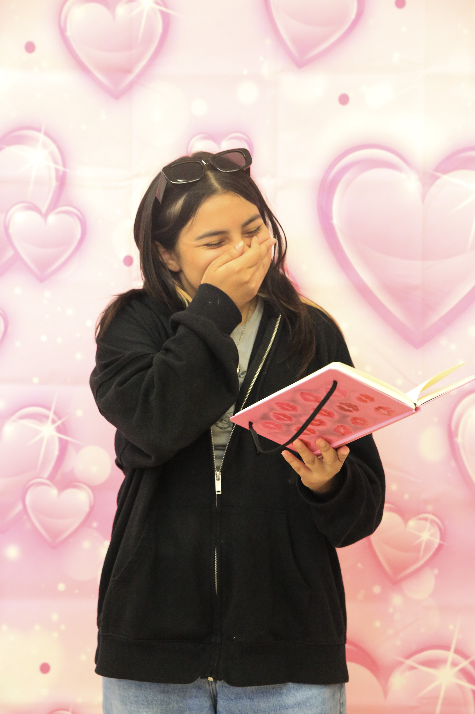

Marcela
My name is Marcela (Lupe). I am part of the graphic design team of Cyber g.irls. My hobbies are drawing, reading, cooking, writing, sport, and gaming. My favorite sports to play are volleyball, tennis, and track. My favorite thing to cook is fried rice and cake. My favorite books right now are The Hunger games and Lord of The Flies, and my favorite game is Cold Front and Deadplate.

Saran
My name is Saran, I am 13 years old. I’m in Cyber G.IRL as a journalist. I like to write stuff if you can't already tell. I also like to practice playing volleyball. Soon I'm going to try and get on a team when I get better at serving the ball straight. I love looking at fashion and outfits! In fact that was what my first article that i wrote about was fashion. I always love being inspired by anything. Like when I look at outfits online and try making them myself, or when I look at hair inspiration ideas on pinterest and try it out for myself. That's because I'm inspired by it and I try things out for myself because it doesn't really matter to me if I like it or not, because I'm just gonna say at least I tried it out for myself. Try something new if you haven't before to get inspired by something.